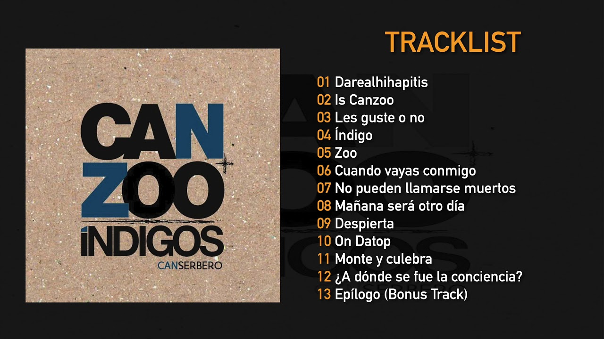
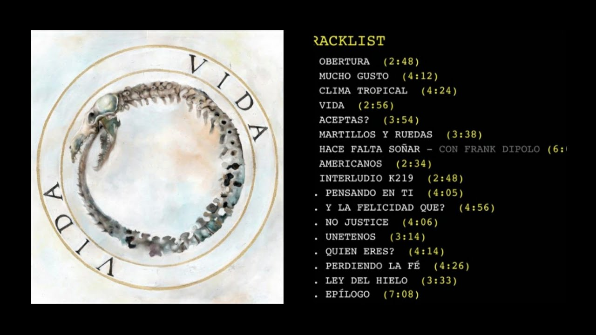
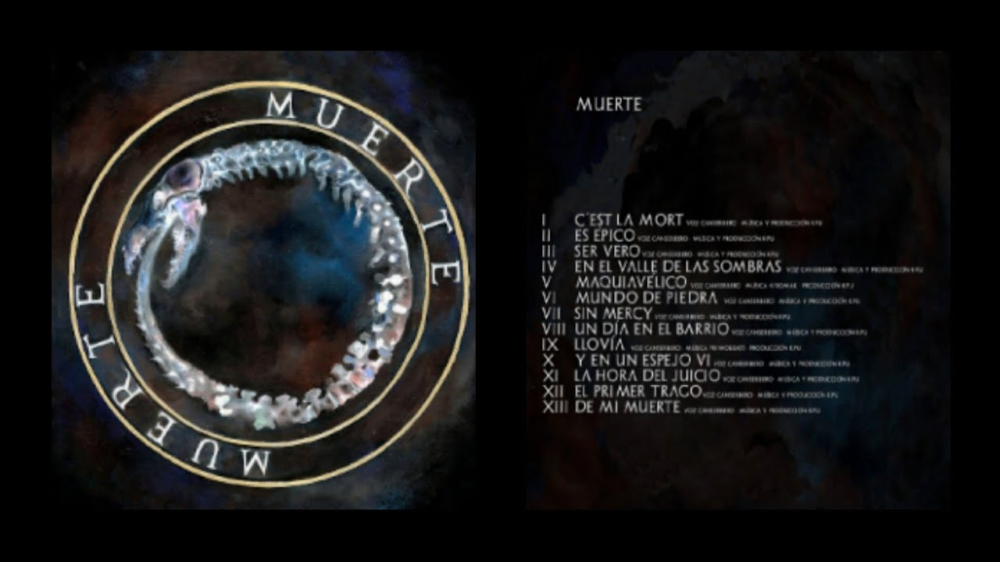

Tirone José González Orama (Caracas, 11 de marzo de 1988-Maracay, 20 de enero de 2015), mejor conocido por su nombre artístico Canserbero,fue un rapero, compositor y activista venezolano,considerado como uno de los exponentes más significativos del rap independiente en su país de origenes y en el resto de América Latina. A lo largo de su carrera, lanzó dos álbumes de estudio como solista, Vida (2010) y Muerte (2012), respectivamente,con varias canciones destacadas, como "Pensando en ti", "¿Y la felicidad qué?", "C'est la mort", "Maquiavélico", "Jeremías 17-5", entre otras.El 20 de enero de 2015, Canserbero fue hallado muerto a las afueras del edificio Camino Real, de la urbanización Andrés Bello en Maracay. Existen varias hipótesis acerca de su muerte.
A temprana edad se interesó por el rap, y cuando tenía once años, comenzó a realizar puestas en escena de rap bajo el nombre artístico de Canserbero, una jerga del latinismo perro cerbero (en latín canis cerberus), que significa "guardián", alusión a Cerbero de la mitología griega.Desde joven mostró interés por la música, principalmente influenciado por el reggae y reggaeton, pero tras el asesinato de su medio hermano, sus referencias musicales cambiaron a géneros más críticos como el hip hop y el hard rock,apreciable en canciones como Es épicoy En el Valle de las Sombras.
En 1999, conoció a Manuel Galvis, también conocido como Blackamikase, y al productor Afromak, seudónimo de Leonardo Díaz; ellos integraron una banda llamada Códigos de Barrio, influenciada por Comando 57 y Supremacy Hip Hop Clan. Juntos realizaron varias composiciones musicales, pero debido a sus bajos recursos económicos, solamente grabaron tres temas. En el año 2000, cuando Canserbero tenía doce años,su medio hermano mayor fue asesinado; a partir de ello, empezó a inspirarse en géneros musicales críticos como el hard rock y hip hop de finales de la década de los años 90.
En el año 2003, Canserbero estudió Informática y en clases conoció a Lil Supa, un integrante de Supremacy Hip Hop Clan, quien lo invitó a grabar con Luis Muños; el artista integró una agrupación bajo el seudónimo Basyco, una abreviación de los términos "base y contenido".Con la banda, interpretó canciones del género rap conciencia.Canserbero y Lil Supa publicaron un álbum titulado Can+Zoo Índigos, en Internet.Según los medios de comunicación, el disco "aportó un impacto importante en la movida nacional y latinoamericana de rap no comercial".En el año 2008, el artista subió a Internet una mixtape llamada Nuestra doctrina no es un dogma, es una guía para la acción, en la que compiló varios de sus temas antes grabados.

Trabajó como analista de reclamos en una empresa en Maracay y también en el Instituto Universitario Experimental de Tecnología de La Victoria.Estudió Derecho y Ciencias Políticas en la Universidad Bicentenaria de Aragua, pero decidió dejar la carrera para enfocarse en la música.
También era fanático del blues y el jazz, ritmos a los que les debía las bases sobre las que se asentaban sus rimas. Creció leyendo a Ernesto Sabato, Jorge Luis Borges y Fiódor Dostoievsky, cuyas obras consideraba "las letras que han perdurado en la historia", además de a críticos como Eduardo Galeano.
2010, Canserbero lanzó su álbum de estudio debut como solista, Vida, grabado y editado en Caracas, junto a su productor Kpú. Este álbum, al igual que los demás, fue grabado en un estudio de grabación conocido como "El Techo". Debido a la gran aceptación por parte del público en 2011, recibió el galardón al mejor artista hip hop en los premios Dixtorxión, dándose a conocer en otros países de habla hispana.

En 2012, publicó su segundo álbum, Muerte, y la segunda parte que completa el disco doble Vida/Muerte. El álbum cuenta con 14 temas compuestos por Canserbero, siendo considerado uno de los álbumes más importantes en la historia del género rap en español. Durante el año realizó varios conciertos en Colombia, México y Venezuela. Al año siguiente, lanzó un álbum llamado Apa y Can, junto al rapero Apache. El disco consta de temas como "Ready", y "Stop", una canción que emite fuertes críticas hacia los policías venezolanos. Entre 2013 a 2014, actuó en varios conciertos en países latinoamericanos, entre ellos Chile y Argentina, y también en España. En 2013, participó como vocalista en la canción "Ella" de Mala Rodríguez, para el álbum Bruja.Canserbero tenía varios proyectos musicales que llevaría a cabo en 2015; se preveía conciertos en países de Latinoamérica como Panamá.

El 20 de enero de 2015, Canserbero fue encontrado muerto a las afueras del edificio Camino Real de la urbanización Andrés Bello en Maracay. Existen varias versiones contradictorias sobre su muerte. Una versión supone que Canserbero se había lanzado desde el décimo piso del edificio. En un principio, se dijo que el rapero se encontraba residenciado en el apartamento de Carlos Alberto Alfonzo Molnar (nacido el 21 de diciembre de 1981), bajista de la banda de reggae Zion TPL, quien era su amigo y compañero de trabajo, ya que Canserbero estaba "sufriendo de esquizofrenia". Molnar fue asesinado ese mismo día por apuñalamiento. Esta versión fue declarada principalmente por Guillermo "Nano" Améstica Moraga, cuñado de Molnar. Por otro lado, el Defensor del Pueblo de Venezuela, Tarek William Saab, en marzo del mismo año, decidió reabrir el caso. "Haber sacado las romanillas de la ventana indica método, no desesperación", opinó el defensor, quien se apoyó en el testimonio de las hermanas para indicar que las romanillas no estaban al momento de la caída de Canserbero, "pero alguien las volvió a poner después", dijo, lo que conlleva a la segunda hipótesis del asesinato. El defensor también admitió que las hermanas de Canserbero sostienen que la esposa del bajista Carlos Molnar y principal testigo de los hechos, Natalia Améstica (María Natalia Améstica Moraga), se fue de Venezuela con rumbo a Chile días después de los hechos. Canserbero venía de realizar una gira por Chile y Argentina junto con Natalia y Carlos Molnar, quien iba a ejercer de productor de su nuevo disco. El último detalle facilitado por las hermanas al defensor es que, en dicha gira el rapero había logrado recaudar unos seis mil dólares, gracias a las presentaciones. El dinero que guardó en el apartamento de Molnar, hasta el momento en que ocurrieron los hechos, no fue encontrado.
Más tarde, sus familiares desmintieron dichas conjeturas aludiendo que el artista no tenía ninguna enfermedad mental, y que cuando se encontró su cuerpo, no poseía en las manos la cantidad de sangre que debería tener si realmente hubiera asesinado a apuñaladas a Molnar. La esposa de Molnar, Natalia Améstica, al brindar sus declaraciones, relató que Canserbero ingresó a su habitación y le propinó varias puñaladas a su esposo, acabando con su vida, y tras esto decidió suicidarse.8 A día de hoy no existe una versión concretamente esclarecida sobre la muerte de Canserbero. Su cuerpo fue sepultado en el Cementerio Metropolitano de Maracay. En su epitafio se lee la frase "ni más, ni menos".